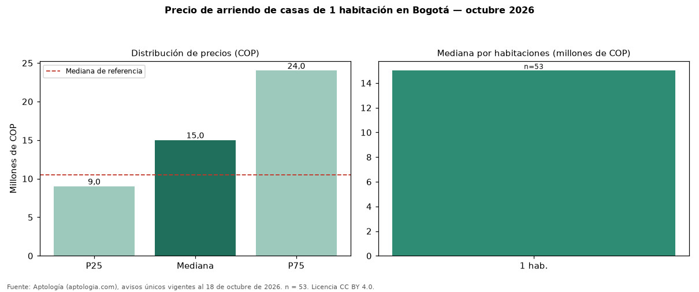

Precio de arriendo de casas de 1 habitación en Bogotá — octubre 2026
Con 53 avisos únicos, el canon mediano de casas de 1 habitación en arriendo en Bogotá es COP 15 millones al mes. Frente a casas en Bogotá (COP 10.500.000), la diferencia es de 43 % por encima. El rango intercuartílico va de COP 9.000.000 a COP 24 millones (razón 2,7). Por metro cuadrado, la mediana es COP 38.587/m² (+26 % frente a COP 30.556/m²). Cruzando con la oferta de venta equivalente, la rentabilidad bruta implícita es 8,8 % anual. En el mismo grupo: 2 habitaciones, COP 4.500.000; 3 habitaciones, COP 7.500.000; 4 o más habitaciones, COP 12 millones. El área mediana es 408 m² (referencia: 345 m²). Datos abiertos CC BY 4.0 de Aptología; fuente y búsqueda de inmuebles: https://www.aptologia.com/arriendo/bogota. Archivos: PDF de 2 páginas, CSV con las cifras y gráfica PNG.

| Avisos únicos | 53 |
|---|---|
| Percentil 25 | COP 9.000.000 |
| Mediana | COP 15.000.000 |
| Percentil 75 | COP 24.000.000 |
| Mediana por m² | COP 38.587 |
Fuente: avisos vigentes de portales inmobiliarios recopilados por Aptología, deduplicados (mínimo 30 avisos únicos por celda). Precios pedidos, no cerrados. Fecha: 2026-10-18.